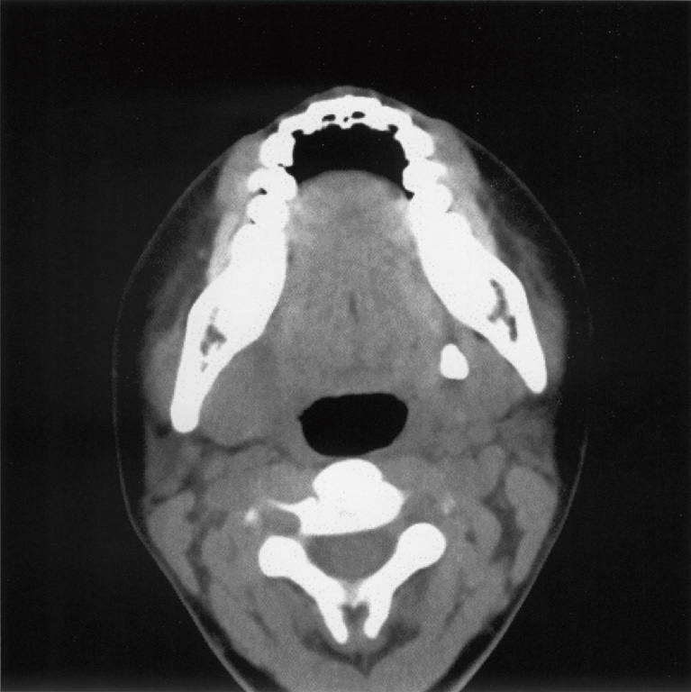
| 選択肢 | 解説 |
|---|---|
| ａ Sjögren 症候群 | 両側の涙腺・唾液腺がびまん性に侵される自己免疫疾患で、症状は乾燥（口腔乾燥・眼乾燥）が主体。「片側だけ」「腫脹を反復」という経過に合わない。CTで導管内の石灰化を作ることはない。 |
| ｂ 顎下腺腫瘍 | 腫瘍は増大こそすれ、腫れたり引いたりを繰り返さない。顎下腺腫瘍は無痛性で持続する腫瘤として触れる。本問は「腫脹を反復」という時間経過そのものが唾石症を指している。 |
| ｃ 舌下腺腫瘍 | 舌下腺は口腔底にあり、腫れても「下顎部（顎下）」の腫脹にはならない。舌下腺で頻度が高い病変はガマ腫（ranula）＝粘液瘤で、これも口腔底の青みがかった無痛性の膨隆として見える。 |
| ◯ ｄ 唾石症 | ◯ 食事のたびに唾液がせき止められ、腺が腫れて痛む（唾疝痛）＝「腫脹の反復」。CTでは口腔底〜顎下部の導管走行に一致した、骨と同じくらい白い小さな高吸収の結石が写る。本問のCTでも下顎骨の内側・口腔底に境界明瞭な点状の高吸収域が1個みられる。唾石の8〜9割は顎下腺（Wharton管）である。 |
| ｅ リンパ管腫 | 乳幼児期に発見される先天性の脈管奇形で、CTでは隔壁を伴う多房性の低吸収（水と同じ）腫瘤。石灰化ではないし、食事に同期した反復もしない。 |
| 疾患 | 側性 | 経過・キーワード | 決め手 |
|---|---|---|---|
| 唾石症 | 片側 | 食事のたびに腫脹＋疼痛（唾疝痛）を反復 | 単純CT・咬合法エックス線で結石 |
| 流行性耳下腺炎 | 両側が多い | 小児・発熱・耳下腺の急性腫脹、1回のみ | ムンプスIgM／血清アミラーゼ上昇 |
| Sjögren症候群 | 両側 | 中年女性・口腔乾燥・眼乾燥、慢性 | 抗SS-A/SS-B抗体・口唇腺生検・唾液腺造影のapple tree |
| 唾液腺腫瘍 | 片側 | 無痛性で持続、徐々に増大（反復しない） | MRI＋穿刺吸引細胞診 |
| ガマ腫・リンパ管腫 | 片側 | 口腔底の無痛性膨隆／小児 | 多房性・水と同じ低吸収 |
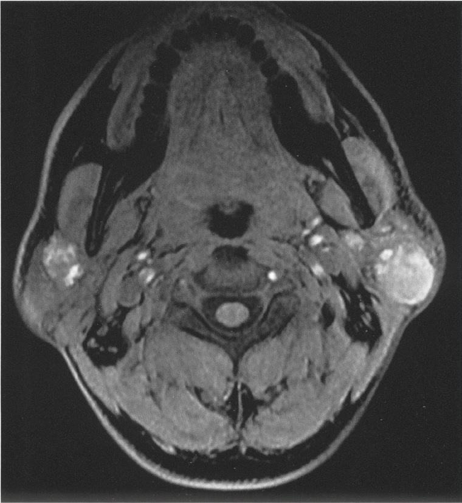
| 選択肢 | 解説 |
|---|---|
| ａ 唾石症 | 唾石は顎下腺が8〜9割で、しかも「食事のたびに腫れて痛む」。本例は耳下部の無痛性腫瘤が10年で、経過も部位も合わない。MRIで写っているのも結石ではなく充実性〜囊胞性の腫瘤である。 |
| ｂ 正中頸囊胞 | 名前のとおり前頸部の「正中」、舌骨付近にできる。耳下部（耳の下・下顎枝の外側）に両側性にできることはない。嚥下や舌の突出で挙上するのが特徴で、本例の記載にはない。 |
| ◯ ｃ Warthin 腫瘍 | ◯ 高齢男性・耳下腺・両側（多発）・増大と縮小を繰り返す・弾性軟——4つそろえばWarthin腫瘍。耳下腺良性腫瘍で唯一「両側性・多発」が目立つ腫瘍で、内部に囊胞（貯留液）を持つため軟らかく、炎症で一時的に腫れたり引いたりする。MRIでも両側の耳下腺に境界明瞭な腫瘤があり、内部の信号が不均一で（囊胞成分を反映）、左が右より大きいという記載とも一致する。 |
| ｄ Sjögren 症候群 | 両側性という点だけは合うが、腫れ方が違う。Sjögrenは腺全体がびまん性に腫れるのであって、境界明瞭な「腫瘤」を作らない。主症状は口腔乾燥・眼乾燥で、本例には乾燥症状の記載がない。 |
| ｅ 耳下腺多形腺腫 | 耳下腺腫瘍で最も多い（良性の約6〜7割）が、典型は中年女性の片側・単発で、硬く、ゆっくり一方向に増大する。両側性・多発、増大と縮小の反復はWarthin腫瘍を強く示唆する。MRIでは多形腺腫はT2で著明な高信号（粘液軟骨様基質）を示す点も違う。 |
| 多形腺腫 | Warthin腫瘍 | 悪性（粘表皮癌・腺様囊胞癌など） | |
|---|---|---|---|
| 頻度 | 耳下腺腫瘍の最多 | 第2位 | 耳下腺腫瘍の約2割 |
| 年齢・性 | 中年女性 | 高齢男性・喫煙 | 問わない |
| 側性・数 | 片側単発 | 両側性・多発が特徴 | 片側単発 |
| 部位 | 浅葉が多い | 後下極 | どこでも |
| 触診 | 硬め・可動性良好 | 弾性軟（囊胞） | 硬い・可動性不良・皮膚に癒着 |
| 顔面神経麻痺 | なし | なし | あり＝悪性を強く示唆 |
| 99mTcO4-シンチ | 集積なし（cold） | 集積あり（hot） | 集積なし |
| 注意点 | 被膜外に突出があり、核出術では再発。長期経過で悪性化（多形腺腫由来癌） | 悪性化はごく稀 | 頸部郭清・術後照射 |
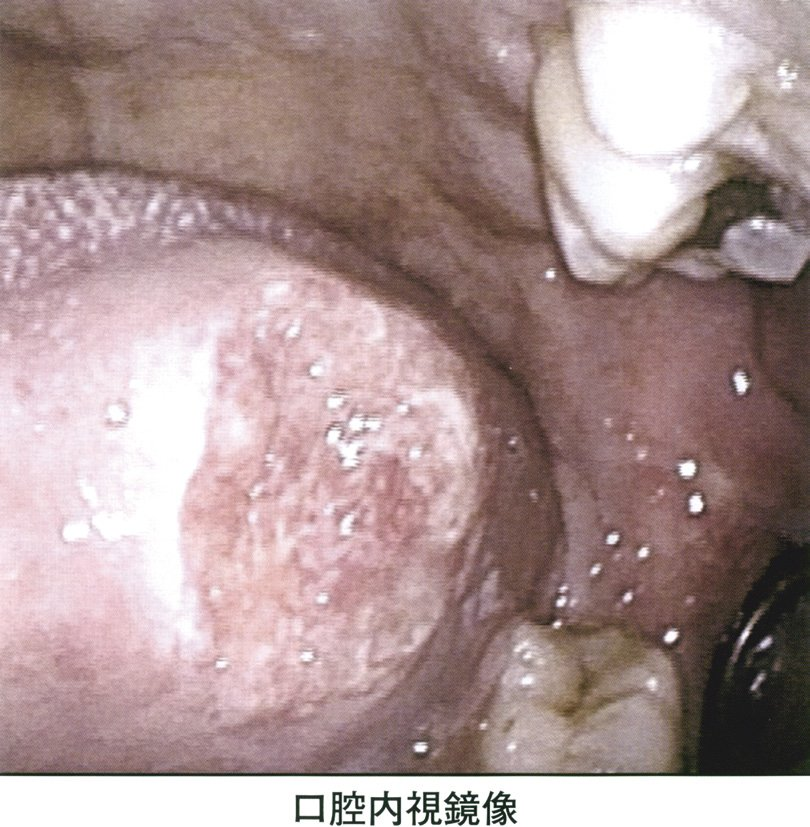
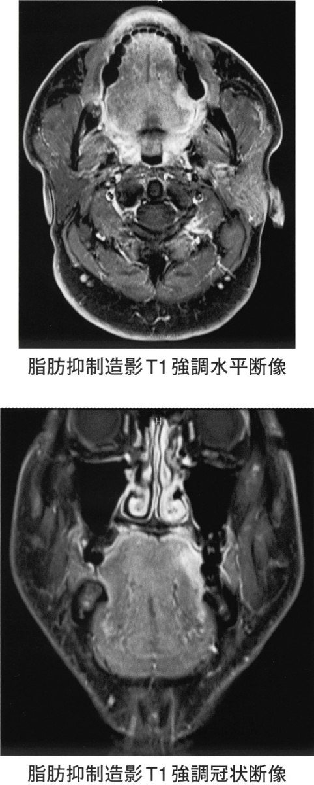
| 選択肢 | 解説 |
|---|---|
| ◯ ａ 手術治療 | ◯ 舌に限局し（T1〜T2）、頸部リンパ節転移も遠隔転移もない早期舌癌。口腔癌の第一選択は手術（舌部分切除術）で、本例のように舌の可動部にとどまる病変なら舌部分切除だけで根治が狙える。内視鏡像でも病変は舌左側縁の白色〜発赤調の隆起にとどまり、口腔底や下顎への進展を示す所見がない。 |
| ｂ 粒子線治療 | 陽子線・重粒子線の保険適用は限られ、扁平上皮癌である舌癌は基本的に対象外（頭頸部では骨軟部肉腫・悪性黒色腫・腺様囊胞癌などの「放射線抵抗性・非扁平上皮」腫瘍が対象）。切除可能な早期癌にわざわざ選ぶ治療ではない。 |
| ｃ 永久気管孔造設 | 喉頭全摘に伴って気道を頸部に付け替える処置で、喉頭癌・下咽頭癌の手術で行う。舌の限局病変で喉頭を犠牲にする理由はない。 |
| ｄ 経皮的胃瘻造設 | 長期の経口摂取困難が見込まれるときの栄養路で、進行癌の化学放射線療法や広範切除＋再建の「支持療法」として併用されうる。「まず行う」根治治療ではない。 |
| ｅ 薬物による抗癌治療 | 切除不能・再発転移例、あるいは化学放射線療法の一部として使う。切除可能な早期口腔癌に単独で行っても根治率は劣る。 |
| 状況 | 治療 | 要点 |
|---|---|---|
| 舌に限局・N0（本問） | 舌部分切除術（あるいは組織内照射） | 機能温存でき、根治可能 |
| 口腔底・下顎へ進展 | 舌・口腔底切除＋下顎骨切除＋再建 | 遊離皮弁で舌の形と嚥下を作り直す |
| 頸部リンパ節転移あり | 原発切除＋頸部郭清（±術後化学放射線） | 顎下（Ⅰ）・上内深頸（Ⅱ）が好発 |
| 切除不能・遠隔転移 | 化学療法（±免疫チェックポイント阻害薬）・放射線 | 緩和が目的になることも |
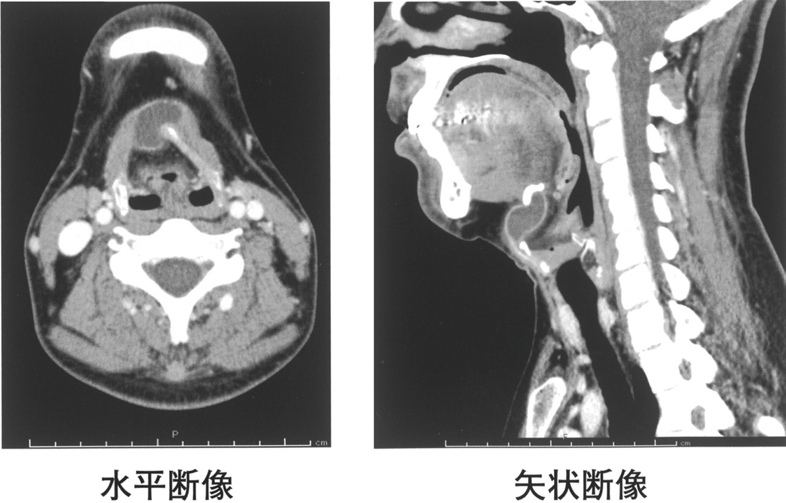
| 選択肢 | 解説 |
|---|---|
| ａ 側頸囊胞 | 第二鰓裂遺残に由来し、胸鎖乳突筋の前縁（頸部の「側面」）にできる。正中〜傍正中ではないし、嚥下で挙上しない。若年者の側頸部の無痛性囊胞として出題される。 |
| ｂ 皮様囊胞 | 類皮囊腫。口腔底の正中にできることがあり紛らわしいが、舌骨とつながらないので嚥下で挙上しないし、CTでは脂肪成分（脂肪と同じ低吸収・sack of marbles 像）を含む。 |
| ◯ ｃ 正中頸囊胞 | ◯ 舌骨付近・正中（傍正中）・嚥下で挙上——この3点で確定。甲状舌管（甲状腺が舌根から下降した経路）の遺残で、囊胞が舌骨と線維性に連続しているため、嚥下や舌の突出で一緒に動く。CTでは境界明瞭・内部が水と同じ低吸収の単房性囊胞で、感染を起こすと壁が造影される。 |
| ｄ 腺腫様甲状腺腫 | 甲状腺の実質にできる結節で、位置は舌骨よりずっと下（甲状軟骨〜気管の高さ）。甲状腺は嚥下で挙上するので「挙上する」だけでは区別できないが、舌骨付近という高さが合わない。また囊胞ではなく充実性の結節であることが多い。 |
| ｅ 囊胞状リンパ管腫 | 乳幼児の後頸三角（頸部側方）に好発する多房性の脈管奇形。CTでは隔壁を持つ多房性の低吸収腫瘤で、周囲へ這うように広がり境界が不明瞭。36歳で初発する単房性の正中腫瘤とは合わない。 |
| 疾患 | 位置 | 動き・特徴 | 由来 |
|---|---|---|---|
| 正中頸囊胞 | 正中〜傍正中・舌骨の高さ | 嚥下・舌の突出で挙上 | 甲状舌管遺残 |
| 側頸囊胞 | 胸鎖乳突筋前縁（側方） | 挙上しない | 第二鰓裂遺残 |
| 囊胞状リンパ管腫 | 後頸三角・乳幼児 | 多房性・境界不明瞭で這う | リンパ管奇形 |
| 甲状腺疾患 | 甲状軟骨より下・気管前 | 嚥下で挙上（正中頸囊胞と共通） | 甲状腺 |
| 皮様囊胞 | 口腔底・正中 | 挙上しない・脂肪成分 | 外胚葉遺残 |
| 粉瘤（表皮囊腫） | 皮内・皮下 | 皮膚と一体で動く・中央に開口部 | 毛包 |
| 選択肢 | 解説 |
|---|---|
| ◯ ａ 血 腫 | ◯ 耳下腺は血流が豊富で、術後の創内出血・血腫は一般的な合併症。頸部の血腫は気道を圧迫しうるため、ドレーンを留置し、術後は腫脹・呼吸状態を観察する。あらゆる手術で説明すべき基本の合併症でもある。 |
| ｂ 髄液漏 | 硬膜を開ける手術（頭蓋底・経蝶形骨・脊椎など）の合併症。耳下腺は頭蓋外の軟部組織にあり、くも膜下腔と交通しないので起こらない。耳鼻科領域で髄液漏が問題になるのは側頭骨骨折・内耳道や頭蓋底に及ぶ手術・篩板損傷である。 |
| ◯ ｃ 異常発汗 | ◯ Frey症候群（耳介側頭神経症候群）。耳下腺へ行く副交感神経（耳介側頭神経経由）が切断され、再生する際に皮膚の汗腺・血管へ誤って再支配されることで起こる。術後数か月してから、食事のたびに術側の頰〜耳前部が発汗・発赤する。診断はMinorヨードデンプン試験。治療は制汗薬・ボツリヌス毒素注射。 |
| ｄ テタニー | 副甲状腺の障害による低カルシウム血症の症状で、甲状腺全摘術の合併症である。副甲状腺は甲状腺の背側にあり、耳下腺の手術野とは別の場所。Chvostek徴候・Trousseau徴候を伴う。 |
| ◯ ｅ 顔面神経麻痺 | ◯ 耳下腺手術で最も重要な合併症。顔面神経本幹は茎乳突孔を出た直後に耳下腺の中へ入り、腺を浅葉と深葉に分けながら扇状に枝分かれする——つまり腫瘍と神経は必ず隣り合う。術中は神経モニタリング下に本幹から末梢へ剥離するが、牽引による一過性麻痺は珍しくなく、必ず術前に説明する。 |
| 合併症 | 起こる手術 | 機序 |
|---|---|---|
| 顔面神経麻痺 | 耳下腺手術・中耳/側頭骨手術 | 神経が手術野を貫く |
| Frey症候群（味覚性発汗） | 耳下腺手術 | 耳介側頭神経の副交感線維が汗腺へ誤再支配 |
| 血腫・唾液瘻 | 耳下腺・顎下腺手術 | 血流豊富、断端から唾液が漏れる |
| テタニー（低Ca） | 甲状腺全摘 | 副甲状腺の損傷・血流障害 |
| 反回神経麻痺（嗄声） | 甲状腺・食道・大動脈手術 | 反回神経が手術野を走る |
| 髄液漏 | 頭蓋底・経蝶形骨洞・内耳道の手術、篩板損傷 | 硬膜の破綻 |
| 下顎縁枝麻痺（口角下垂） | 顎下腺摘出・頸部郭清 | 下顎縁を走る枝の牽引・切断 |
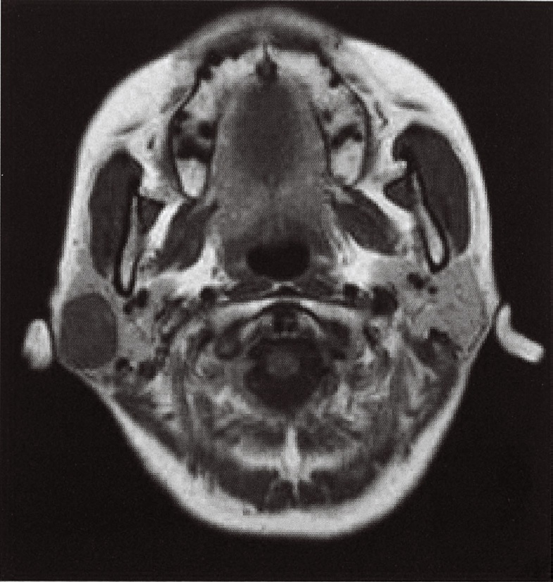
| 選択肢 | 解説 |
|---|---|
| ａ 側頸囊胞 | 第二鰓裂遺残で、胸鎖乳突筋の前縁に沿ってできる囊胞。本問で最も票を集めた誤答だが、囊胞なら内部は液体で均質、T1では低信号・T2で著明な高信号となり、位置も下顎角より下方・胸鎖乳突筋の前縁で、耳下腺の中には入らない。 |
| ｂ 顎下腺腫瘍 | 顎下腺は下顎骨体部の下・内側（顎下三角）にあり、画像上は下顎枝より前下方。本問の腫瘤は下顎枝の外側・耳のすぐ前下方にあり位置が違う。顎下腺腫瘍なら口腔内外の双手診で下顎の内側に触れる。 |
| ｃ 甲状腺腫瘍 | 甲状腺は甲状軟骨〜気管前面にあり、この断面には写らない。「頸部の腫瘤」という主訴だけで甲状腺を選ぶのは早い。甲状腺結節なら嚥下で挙上するという所見が付く。 |
| ◯ ｄ 耳下腺腫瘍 | ◯ 健側（画像では左側）の耳下腺は脂肪に富むためT1で明るく写るのに、患側では同じ位置が境界明瞭な低信号の腫瘤に置き換わっている——左右を見比べれば「この腫瘤は耳下腺そのものの中にある」と分かる。下顎枝の外側・外耳道の前下方という局在も耳下腺浅葉に一致する。経過（10年・緩徐増大）・所見（表面平滑・可動性良好・無痛・顔面神経麻痺なし＝良性）から多形腺腫が最も考えられる。 |
| ｅ 正中頸囊胞 | 舌骨付近の「正中」にできる甲状舌管遺残で、右側方の腫瘤ではありえない。嚥下で挙上するという所見もない。 |
| 読む順番 | 見るもの | 意味 |
|---|---|---|
| ① 局在 | 下顎枝の外側／外耳道の前下方／健側の脂肪高信号と対称位置 | 耳下腺内かどうか |
| ② 境界 | 境界明瞭・辺縁平滑 | 良性を示唆（不整・浸潤は悪性） |
| ③ 深達 | 深葉に及ぶか／傍咽頭間隙へ張り出すか | 術式（浅葉切除か全摘か）を左右する |
| ④ 頸部 | リンパ節腫大の有無 | 悪性の傍証 |
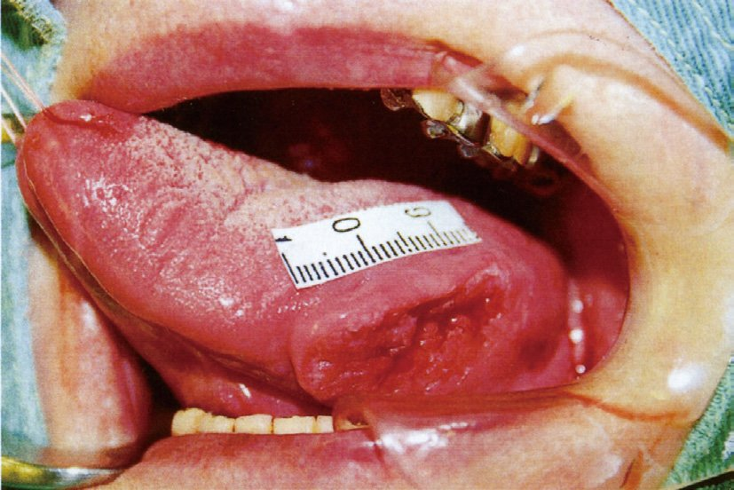
| 選択肢 | 解説 |
|---|---|
| ａ レーザー手術 | ごく表在の早期病変（上皮内癌・T1の一部）では選択肢になる。出血が少なく機能温存に優れるが、深達度の評価ができない（標本が焼灼される）ため適応は限られる。いずれにせよ「適切でない」とまでは言えない。 |
| ｂ 舌部分切除術 | 早期舌癌の標準治療。安全域を付けて楔状に切除し、小さければ縫縮、大きければ皮弁で再建する。本例はN0の限局病変なので第一選択になりうる。 |
| ｃ 放射線外照射 | 単独での根治力は小線源に劣るが、手術非適応例・術後照射・進行例の化学放射線療法として用いられる。舌癌の治療手段として「適切でない」わけではない。晩期障害として口腔乾燥・う蝕・下顎骨壊死に注意する。 |
| ｄ 密封小線源治療 | 組織内照射。早期舌癌（T1・T2でN0）では手術と同等の局所制御率で、舌の形と機能を残せるのが利点。192Ir や 198Au の線源を病巣に刺入する。本例はまさに良い適応であり、「適切でない」の逆である。 |
| ◯ ｅ 放射性同位元素〈RI〉内用療法 | ◯ これが「適切でない」治療。RI内用療法（131I）は、ヨードを取り込む能力を持つ分化型甲状腺癌（乳頭癌・濾胞癌）の治療であって、舌の扁平上皮癌はヨードを取り込まないので全く効かない。同じ「放射線」でも外照射・小線源は病巣に直接あてる局所治療、RI内用療法は薬として飲ませ腫瘍自身に集めさせる全身治療で、成り立ちがまったく違う。（他にRI内用療法が使われるのは骨転移の 223Ra、褐色細胞腫の 131I-MIBG、神経内分泌腫瘍の 177Lu-DOTATATE などで、いずれも取り込み機構がある腫瘍。） |
| 治療 | 位置づけ | 特徴 |
|---|---|---|
| 舌部分切除術 | 標準治療 | 病理で深達度・切除断端を評価できる |
| 密封小線源治療（組織内照射） | 手術と同等の局所制御率 | 舌の形態・機能温存に優れる |
| レーザー手術 | ごく表在の病変 | 出血少・機能温存／深達度評価が困難 |
| 外照射 | 術後照射・非手術例・進行例 | 口腔乾燥・う蝕・下顎骨壊死の晩期障害 |
| RI内用療法（131I） | 舌癌には適応なし | 分化型甲状腺癌の治療。ヨード取り込みが前提 |
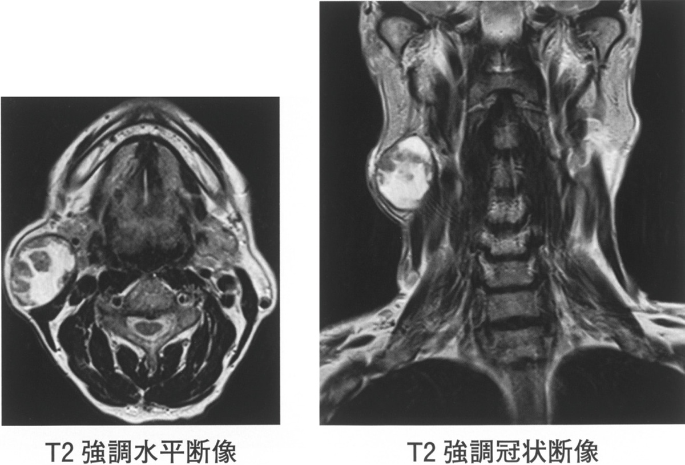
| 選択肢 | 解説 |
|---|---|
| ａ 耳下腺癌 | 悪性なら硬く、可動性不良、しばしば疼痛や顔面神経麻痺を伴う。本例は軟らかく無痛で合わない。細胞診でも異型細胞ではなく「好酸性の上皮細胞集塊」＝オンコサイトが記載されており、良性像である。 |
| ｂ 頸部血管腫 | 血管奇形・血管腫は小児に多く、MRIではT2著明高信号で静脈石を伴うことがある。99mTcO4- 唾液腺シンチには集積しないし、細胞診で好酸性上皮細胞は出てこない。 |
| ◯ ｃ Warthin 腫瘍 | ◯ 60歳男性・耳下腺の「後下部」・軟らかい（囊胞性）・細胞診で囊胞性背景＋好酸性上皮細胞（オンコサイト）・99mTcO4- シンチで集積あり——5つとも Warthin腫瘍の定義的所見。オンコサイトはミトコンドリアに富み、唾液腺と同じように 99mTcO4-（パーテクネテート）を能動的に取り込むため、シンチで「hot」に写る唯一の唾液腺腫瘍である。MRIでも右耳下腺後下部に境界明瞭で内部不均一（囊胞成分を含む）な腫瘤が見える。 |
| ｄ IgG4 関連疾患 | Mikulicz病＝涙腺・唾液腺の「両側性・持続性のびまん性腫脹」が特徴で、単発の腫瘤は作らない。血清IgG4高値・他臓器病変（自己免疫性膵炎・後腹膜線維症）を伴い、ステロイドがよく効く。 |
| ｅ 耳下腺多形腺腫 | 耳下腺腫瘍で最多だが、硬めで、シンチには集積しない（cold）。細胞診では粘液軟骨様基質を背景に筋上皮細胞と導管上皮細胞が出て、「好酸性の上皮細胞集塊」ではない。MRIではT2で著明な高信号を示す。 |
| 検査 | 分かること | 使いどころ |
|---|---|---|
| 99mTcO4- 唾液腺シンチ | Warthin腫瘍（hot）／腺の分泌機能 | 耳下腺腫瘤の質的診断・Sjögrenの機能評価 |
| 穿刺吸引細胞診（FNA） | 良悪の推定・組織型の示唆 | 唾液腺腫瘤の第一歩（切開生検は播種のため行わない） |
| MRI | 局在（浅葉/深葉）・境界・深達 | 術式の決定 |
| 単純CT・超音波 | 唾石（石灰化） | 唾石症 |
| 唾液腺造影 | 導管の形（apple tree／点状陰影） | Sjögren症候群 |
| 口唇小唾液腺生検 | リンパ球浸潤 | Sjögren症候群の確定 |
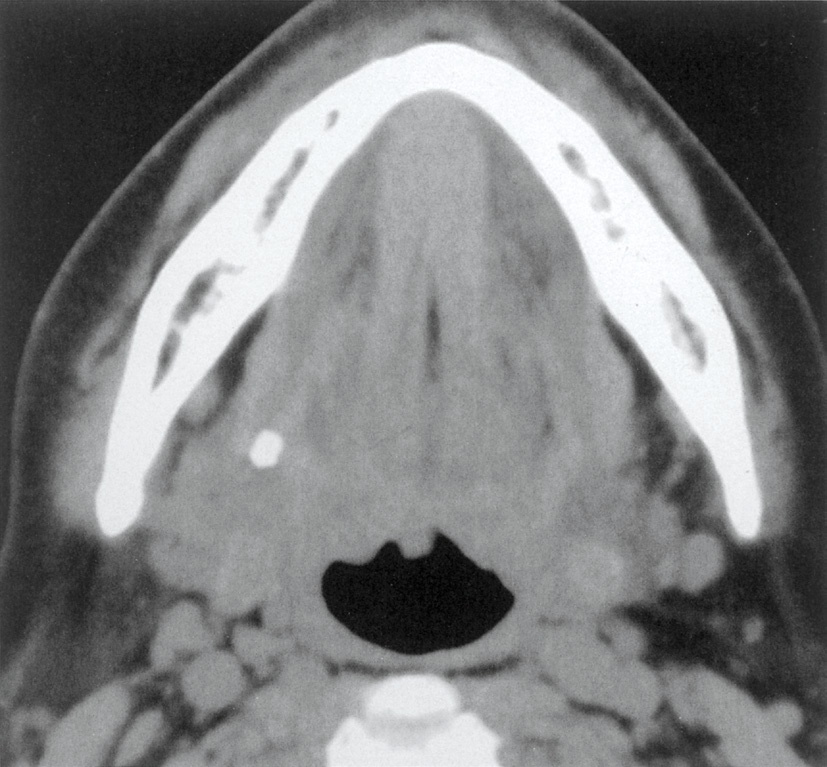
| 選択肢 | 解説 |
|---|---|
| ａ 発熱を伴う。 | 単純な唾石症は感染を起こさなければ発熱しない。本例も白血球9,000・CRP 0.4mg/dL と炎症反応が陰性で、「発熱を伴う」とは言えない。閉塞に細菌感染が加わると急性化膿性顎下腺炎となり、発熱・発赤・導管開口部からの排膿が出る——これは合併症である。 |
| ｂ 口腔乾燥を伴う。 | 片側の1腺が詰まっても、残る3対の大唾液腺と多数の小唾液腺が働くので口腔乾燥にはならない。口腔乾燥＝両側性・びまん性の腺障害（Sjögren症候群・IgG4関連疾患・頭頸部への放射線照射・抗コリン薬）のときの症状である。 |
| ◯ ｃ 食事中に疼痛を伴う。 | ◯ 唾疝痛（salivary colic）。食事の刺激で唾液分泌が急増するが、結石で導管が詰まっているため唾液が腺内に溜まり、腺が急速に腫れて強い痛みが出る。食後しばらくすると唾液が漏れて腫脹と痛みは自然に軽快する——この「食事に同期した腫脹・疼痛の反復」が唾石症の教科書的な症状。 |
| ｄ 頰部粘膜の腫脹を伴う。 | 頰粘膜に開口するのは耳下腺管（Stenon管）で、顎下腺管（Wharton管）は舌小帯の両側の舌下小丘に開く。顎下腺の唾石で所見が出るのは口腔底であって頰粘膜ではない。 |
| ｅ 口腔底に潰瘍形成を伴う。 | 石が導管を塞ぐだけで、粘膜に潰瘍はできない。口腔底で見られるのは導管に沿った硬い索状の触知（石そのもの）や開口部の発赤・唾液流出の減少である。口腔底の潰瘍を見たら、まず口腔底癌・舌癌の進展を疑うべきで、唾石症の所見ではない。 |
| 項目 | 内容 |
|---|---|
| 好発腺 | 顎下腺 80〜90%（粘稠な唾液・長い上行性のWharton管・アルカリ性）。耳下腺は少なく、舌下腺は稀 |
| 主症状 | 唾疝痛＝食事のたびの腫脹＋疼痛、食後に自然軽快（反復） |
| 診断 | 単純CT・咬合法エックス線・超音波（約8割がエックス線不透過）。造影は不要 |
| 合併症 | 急性化膿性唾液腺炎（発熱・発赤・開口部からの排膿） |
| 治療 | 前方（導管内）＝口内法で切開摘出／腺門部・腺内＝腺ごと摘出。唾液腺内視鏡・体外衝撃波も |
| 開口部 | 顎下腺管＝舌下小丘（舌小帯の両側）／耳下腺管＝上顎第二大臼歯対面の頰粘膜 |
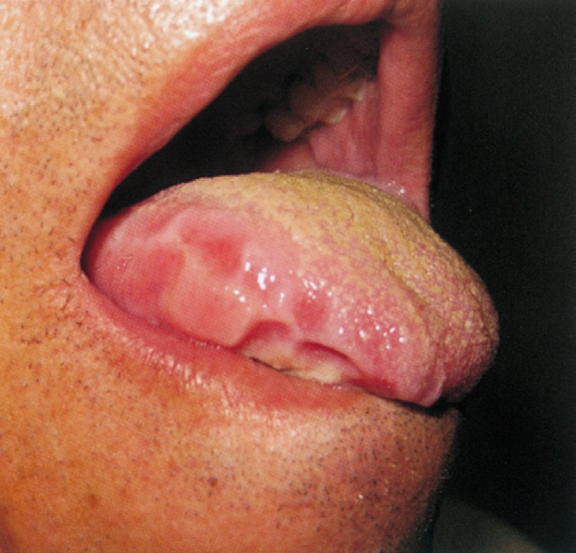
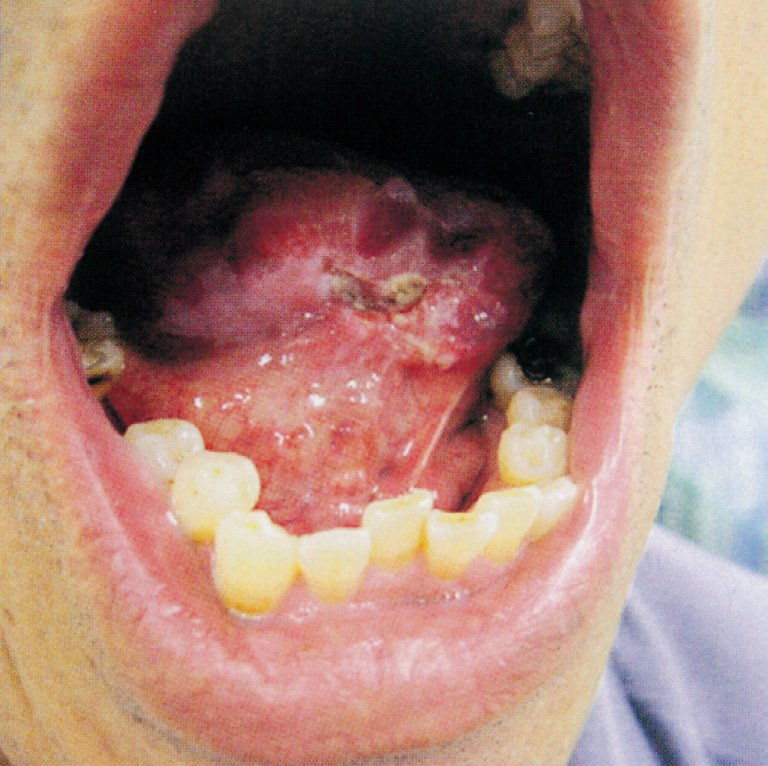
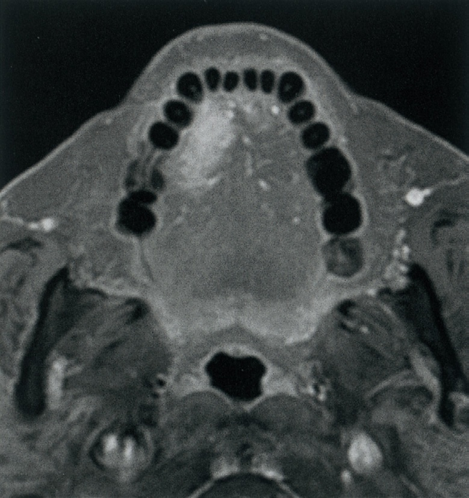
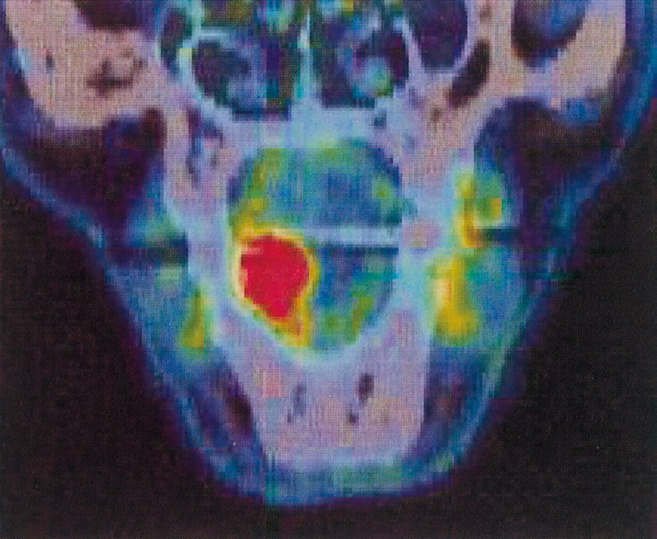
| 選択肢 | 解説 |
|---|---|
| ａ 放射線治療 | 外照射単独では口腔癌の根治力が劣り、下顎骨に近接する病変では骨壊死のリスクが高い。小線源治療も、口腔底へ広がる病変では線源刺入が難しく適応外。切除可能な症例では手術が優先される。 |
| ｂ 舌全摘出術 | 舌を全部取ると嚥下・構音が壊滅的に損なわれる。本例は舌右縁から口腔底に及ぶ病変で、左側の舌は保てる。癌の手術は「安全域を確保できる最小の切除」が原則で、必要以上に取ることは適切でない。 |
| ｃ 抗癌化学療法 | 切除不能例・再発転移例、あるいは化学放射線療法の一部としての位置づけ。遠隔転移がなく切除可能な症例に単独で行う治療ではない。 |
| ｄ レーザー蒸散術 | 病巣を焼き飛ばすので標本が残らず、深達度も切除断端も評価できない。適応は上皮内癌やごく表在の病変に限られ、口腔底まで浸潤した病変に用いれば確実に取り残す。 |
| ◯ ｅ 舌・口腔底切除術 | ◯ 病変が「舌右縁から口腔底にかけて」広がっているので、舌だけでなく口腔底も含めて一塊に切除する。MRI（C）でも造影される腫瘍が舌の側縁から口腔底側へ連続して広がるのがわかり、PET/CT（D）では同部位に一致した集積があり、頸部・遠隔には集積がない（N0M0）。遠隔転移がなく切除可能なので、根治を狙って原発巣を切除するのが最も適切。欠損が大きければ遊離皮弁による再建を併せて行う。 |
| 進展範囲 | 術式 | 補足 |
|---|---|---|
| 舌の可動部に限局（T1-2） | 舌部分切除術 | 縫縮または植皮 |
| 舌＋口腔底（本問） | 舌・口腔底切除術 | 欠損が大きければ遊離皮弁で再建 |
| 下顎骨に接する／浸潤 | ＋下顎骨辺縁切除／区域切除 | 区域切除では骨再建（腓骨皮弁） |
| 舌のほぼ全体・舌根 | 舌（亜）全摘 | 嚥下・構音の障害が大。適応は慎重に |
| 頸部リンパ節転移あり／深達度が深い | ＋頸部郭清 | N0でもセンチネル生検・予防的郭清を検討 |
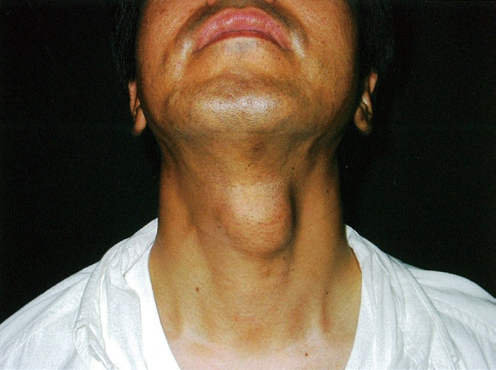
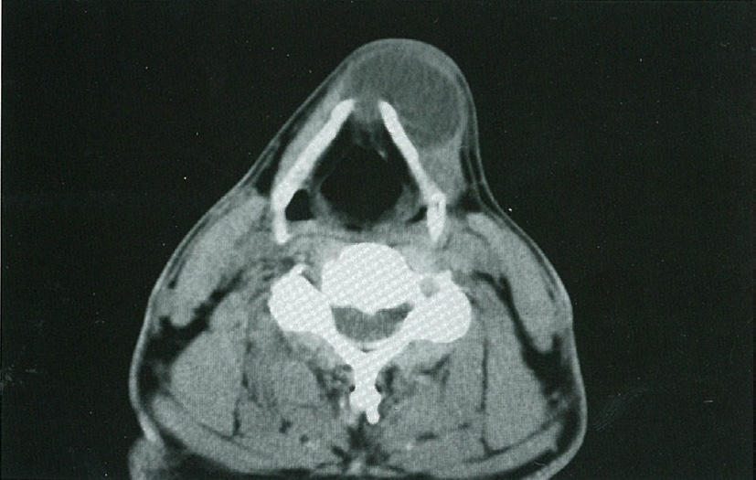
| 選択肢 | 解説 |
|---|---|
| ａ 粉 瘤 | 表皮囊腫。皮膚と一体になって動き、中央に黒い開口部（punctum）が見えることが多い。CTでは皮下の浅い層にとどまり、深部（甲状軟骨の前）まで及ばない。感染すると発赤・疼痛・悪臭のある内容物が出る。 |
| ｂ 脂肪腫 | CTで脂肪と同じ吸収値（マイナス値の低吸収）を示すのが決め手で、水と同じ吸収の囊胞とは値が違う。触診では柔らかく境界不明瞭で、正中に限って生じる理由もない。 |
| ｃ 甲状腺腫 | 甲状腺は甲状軟骨より下、気管の前外側にあり、腫れると左右に張り出す。CTではヨードを含むため周囲筋より高吸収に写るのが特徴で、本例の水と同じ低吸収の囊胞とは異なる。 |
| ◯ ｄ 正中頸囊胞 | ◯ 写真（A）では前頸部の正中に半球状の膨隆があり、CT（B）では舌骨〜甲状軟骨の高さの正中に、境界明瞭で内部が水と同じ低吸収の単房性囊胞が前方へ突出している。正中・囊胞性・緩徐増大＝甲状舌管の遺残（正中頸囊胞）。治療は舌骨中央部を含めて摘出するSistrunk手術。 |
| ｅ リンパ管腫 | 乳幼児期に発見される多房性の脈管奇形で、後頸三角に好発。CTでは隔壁のある多房性の低吸収腫瘤が周囲へ這うように広がり、境界が不明瞭。45歳で3年かけて増大する正中の単房性囊胞とは合わない。 |
| 疾患 | 写真（視触診） | 単純CT |
|---|---|---|
| 正中頸囊胞 | 正中・半球状・弾性軟／嚥下と舌の突出で挙上 | 境界明瞭・単房性・水と同じ低吸収 |
| 粉瘤（表皮囊腫） | 皮膚と一体で動く・中央に開口部 | 皮下に限局し浅い |
| 脂肪腫 | 柔らかく境界不明瞭 | 脂肪と同じ（水より低い）吸収 |
| 甲状腺腫 | 甲状軟骨より下・嚥下で挙上・左右に広がる | ヨードを含み周囲筋より高吸収 |
| リンパ管腫 | 乳幼児・側頸（後頸三角）・柔らかい | 多房性・隔壁あり・境界不明瞭 |
| 選択肢 | 解説 |
|---|---|
| ａ 舌下腺に好発する。 | 好発は顎下腺で80〜90%を占め、舌下腺は稀。顎下腺が多い理由は①唾液が粘稠（ムチンに富む）②Wharton管が長く重力に逆らって前上方へ登る ③唾液がアルカリ性でカルシウム塩が析出しやすいの3つ。舌下腺で多い病変はガマ腫（粘液瘤）である。 |
| ◯ ｂ 摂食時に疼痛が増強する。 | ◯ 唾疝痛。食事の刺激で唾液分泌が急増するのに、結石で導管が閉塞しているため唾液が腺内に溜まって内圧が上がり、腺が急に腫れて強く痛む。食後しばらくして唾液が漏れ出ると腫脹・疼痛は自然に軽快するので、「食事のたびに腫れて痛み、そのあと引く」という反復が特徴になる。 |
| ｃ 腺内唾石は口内法で摘出する。 | 口内法（口腔内から導管を切開して石を取り出す方法）が使えるのは、導管の前方＝口腔底で触れる位置にある石。腺門部より奥・腺内の石は口内法では届かず、顎下腺ごと摘出する（あるいは唾液腺内視鏡を用いる）。「石の位置で術式が変わる」ことがこの選択肢の要点。 |
| ｄ Sjögren 症候群に合併しやすい。 | 両者に直接の因果関係はない。Sjögren症候群は自己免疫性に涙腺・唾液腺が破壊される疾患で、唾液分泌が減る＝乾燥が主症状。唾石症は導管の物理的閉塞で、発症のメカニズムがまったく違う。（唾液の停滞は結石形成に不利ではないが、国試レベルでは「合併しやすい」とはしない。） |
| ｅ エックス線透過性のものが多い。 | 逆。唾石の約8割はリン酸カルシウムなどを主体とし、エックス線不透過（白く写る）。だからこそ単純エックス線（咬合法）・単純CT・超音波で診断できる。（対比として胆石はコレステロール結石が多くエックス線透過性、尿路結石は大半が不透過——「石の見え方」はまとめて覚えるとよい。） |
| 結石 | 好発部位 | エックス線 | 特徴的な痛み |
|---|---|---|---|
| 唾石 | 顎下腺（80〜90%） | 約8割が不透過 | 食事のたびの腫脹＋疼痛（唾疝痛） |
| 胆石 | 胆囊 | コレステロール石が多く透過性（超音波が第一選択） | 脂肪食後の右季肋部痛（胆道疝痛） |
| 尿路結石 | 腎・尿管 | 大半（シュウ酸Ca）が不透過 | 突然の側腹部痛と血尿 |
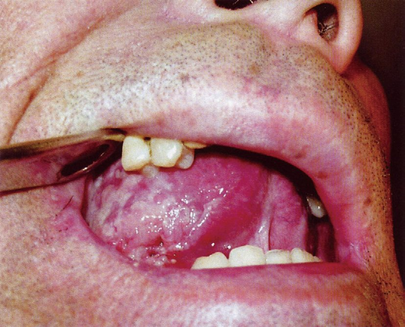
| 選択肢 | 解説 |
|---|---|
| ａ 耳下腺部 | 耳下腺周囲（レベルⅡの上方・耳前部）のリンパ節は、顔面皮膚・外耳道・頭皮の腫瘍の所属リンパ節である。舌の前方（可動部）からのリンパ流はここへは向かわない。 |
| ◯ ｂ 顎下部 | ◯ 舌可動部（特に舌縁）のリンパ流はまず顎下リンパ節（レベルⅠb）とオトガイ下リンパ節（レベルⅠa）、続いて上内深頸リンパ節（レベルⅡ）へ向かう。舌癌の頸部転移で最初に触れるのは顎下部なので、触診で最も注意すべき部位はここになる。硬く、可動性の乏しい腫大リンパ節を触れたら転移を疑う。 |
| ｃ 前頸部 | 前頸部（レベルⅥ・気管前）は甲状腺・喉頭・下咽頭・頸部食道の所属リンパ節。舌の可動部からの一次リンパ流ではない。 |
| ｄ 後頸部 | 後頸三角（レベルⅤ・副神経鎖）は上咽頭癌や頭皮・後頸部皮膚の腫瘍で腫れる。舌癌でここが単独で腫れることはまずなく、腫れるとすれば進行例で下位のレベルまで及んだときである。 |
| ｅ 鎖骨上窩 | レベルⅣ〜Ⅴ下部。ここが腫れるのは遠隔の消化器癌・肺癌などの遠隔リンパ節転移（Virchow転移は左鎖骨上窩）や、頭頸部癌でもかなり進行した段階である。初発の舌癌でまず触るべき場所ではない。 |
| 原発 | まず腫れるレベル | 触る場所 |
|---|---|---|
| 舌（可動部・舌縁） | Ⅰ（顎下・オトガイ下）→ Ⅱ（上内深頸） | 顎下部 |
| 口腔底・下唇 | Ⅰa（オトガイ下）→ Ⅰb | オトガイ下（正中を越えて両側） |
| 上咽頭 | Ⅱ・Ⅴ（後頸三角） | 後頸部——上咽頭癌は頸部腫瘤が初発症状になりやすい |
| 喉頭・下咽頭 | Ⅱ・Ⅲ（±Ⅵ） | 中〜上内深頸／前頸部 |
| 甲状腺 | Ⅵ（気管前・気管傍） | 前頸部 |
| 腹部・骨盤の癌 | 左鎖骨上窩（Virchow） | 鎖骨上窩 |
| 選択肢 | 解説 |
|---|---|
| ａ 唾石症 | 導管の閉塞であって、腺実質や神経を壊す病態ではない。症状は食事のたびの腫脹と疼痛（唾疝痛）にとどまる。そもそも耳下腺の唾石は稀（8〜9割は顎下腺）。 |
| ｂ 流行性耳下腺炎 | ムンプスウイルスによる急性の腺腫脹で、腫れは強いが顔面神経は侵さない。合併症として問われるのは無菌性髄膜炎・精巣炎（思春期以降）・膵炎、そして「ムンプス難聴」＝高度感音難聴である。難聴は起こすが顔面神経麻痺は起こさないという対比が出題の狙いになりやすい。 |
| ｃ 化膿性耳下腺炎 | 脱水・口腔衛生不良の高齢者などで、導管から細菌が逆行して起こる。発赤・圧痛・導管開口部からの排膿を伴い、腺が強く腫れるが、顔面神経麻痺をきたすのは例外的（膿瘍が神経へ波及した場合のみ）。 |
| ｄ 腺リンパ腫〈Warthin 腫瘍〉 | 良性腫瘍なので神経を巻き込まず、麻痺は起こさない。高齢男性・耳下腺後下極・両側性/多発・弾性軟・99mTcO4- シンチで集積が特徴（本章 NO.139・145）。 |
| ◯ ｅ 悪性腫瘍 | ◯ 顔面神経は耳下腺の中を貫いて走るので、腫瘍が神経へ浸潤すれば麻痺が出る。良性腫瘍は神経を押しのけるだけで浸潤しないため麻痺は出ない——だから「耳下腺腫瘤＋顔面神経麻痺＝悪性」という臨床上きわめて重要な指標が成り立つ。代表は粘表皮癌（最多）・腺様囊胞癌（神経周囲浸潤が特徴）・多形腺腫由来癌。他の悪性サインは硬い・可動性不良・皮膚への癒着・疼痛・急速増大・頸部リンパ節腫大。 |
| 疾患 | 理由 | |
|---|---|---|
| きたす | 耳下腺悪性腫瘍（粘表皮癌・腺様囊胞癌・多形腺腫由来癌） | 神経への直接浸潤・神経周囲浸潤 |
| きたす | Ramsay Hunt症候群・Bell麻痺・側頭骨骨折・真珠腫性中耳炎 | 側頭骨内（顔面神経管）の障害 |
| きたさない | 多形腺腫・Warthin腫瘍 | 良性＝圧排するだけ |
| きたさない | 流行性耳下腺炎・化膿性耳下腺炎・唾石症・Sjögren症候群 | 炎症/閉塞であり神経を破壊しない |